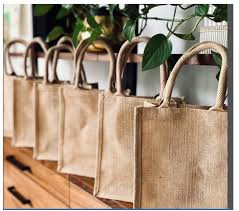
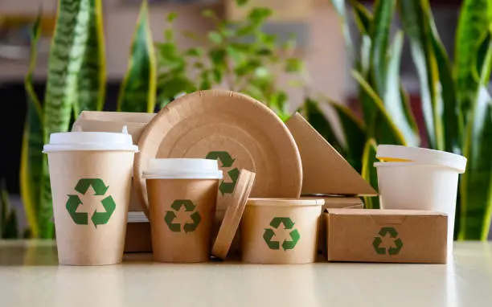
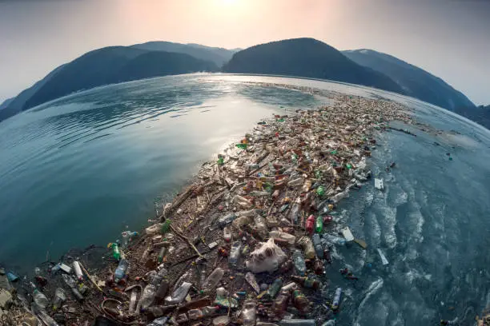
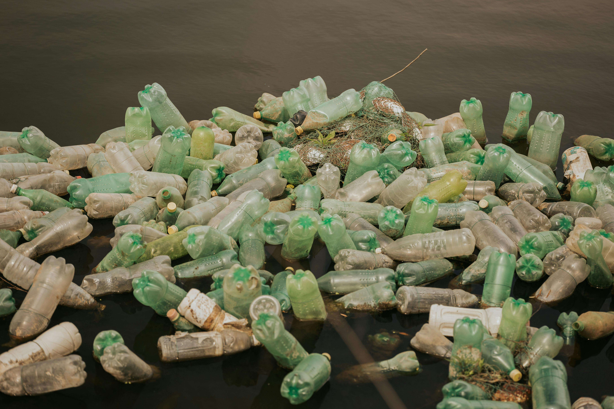
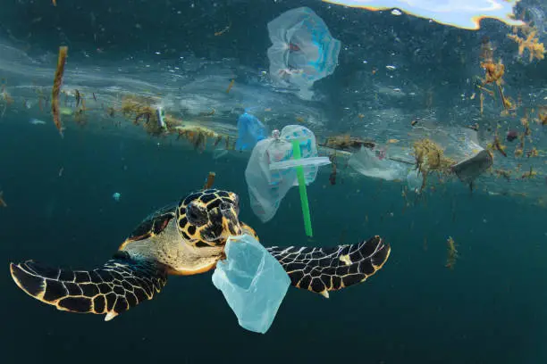
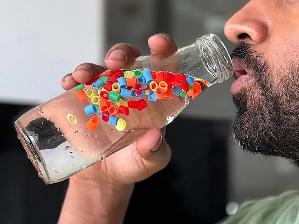

Contact Us







Impacts on Humans




Description
Plastic has a significant impact on human health and the environment. One of the major problems caused by plastic is pollution. Plastic waste often ends up in oceans, rivers, and landfills, where it takes hundreds of years to decompose. As plastic breaks down into microplastics, these tiny particles enter the food chain through water and food sources. Humans then consume these microplastics, which can cause health issues such as hormonal imbalance, respiratory problems, and even damage to internal organs over time. Burning plastic releases toxic gases that pollute the air and can cause breathing problems and serious illnesses like cancer. In many developing countries, plastic waste blocks drainage systems, creating stagnant water that becomes a breeding ground for mosquitoes and diseases. Additionally, chemicals used in plastics can contaminate food and water, leading to long-term health risks. Reducing plastic usage, recycling, and spreading awareness are important steps to protect human health and the environment.
Plastic Pollution Statistics
Plastic pollution is one of the biggest environmental challenges of our time. Every year, millions of tons of plastic waste end up in oceans, affecting marine life, human health, and the global economy. Microplastics have entered our food chain, climate change is increasing due to plastic production, and countries spend billions managing plastic waste. These statistics highlight the urgent need to reduce plastic usage and move toward sustainable alternatives.

8M+
Ocean Pollution
8 million tons of plastic enter oceans every year.

1M+
Marine Life
Over 1 million marine animals die due to plastic pollution annually.

90%
Human Impact
Humans consume microplastics through food, water, and airs.

100%
Microplastics
Microplastics have been found in human blood and organs.

3.4%
Climate Impact
Plastic production contributes to greenhouse gas emissions.

$13B+
Economic Cost
Plastic pollution costs billions in environmental damage.